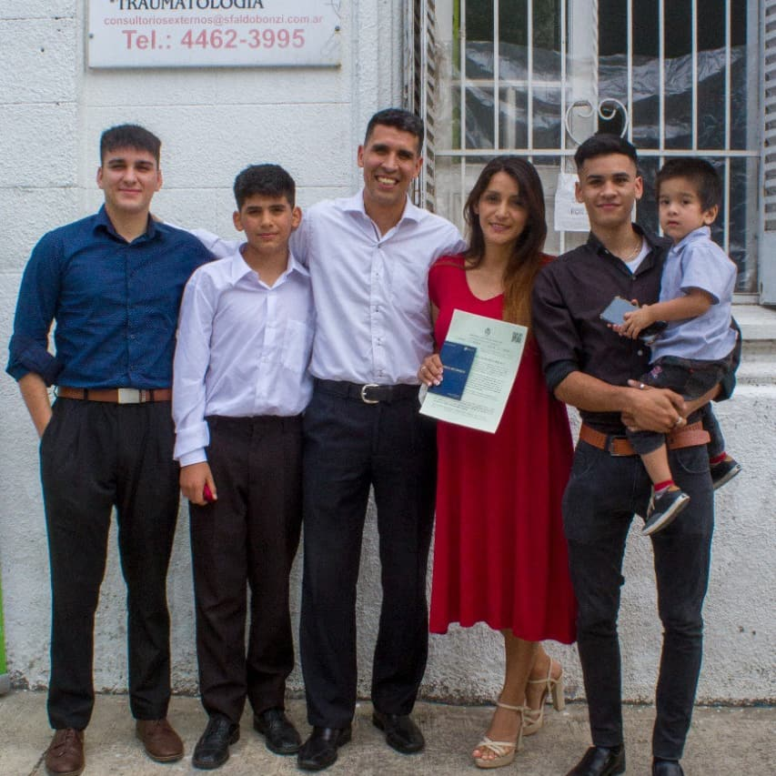

Juan Damian Cardozo | WDD130
Hi My name is Juan Cardozo and I'm from Buenos Aires Argentina. I'm so exciting to start my assigments as Web Programmer in BYU!!! This moment in my life is very exciting because is my first time in BYU and as on line student. I'm 44 years old, I'm married with Anahi and I have four children Emanuel (He was a missionary in Mendoza Argentina Mission), Lucas (He's a missionary in Rancagua Chile Mission), Bruno and Juan Martin. I love play soccer and play drums, I love rock and roll. I'm learning English, I improve my skills every day and I trust in Our Heavenly Father, He helps me every day and I love serving in the Church of Jesuschrist. I know that the Gospel is true, I know that Our Savior live and He deaded for our sins and He gaves salvation for all of us. This is my first web page, It's amazing!!!